5. Sınıf · KTT · Sayfa 1 / Soru 1Kolay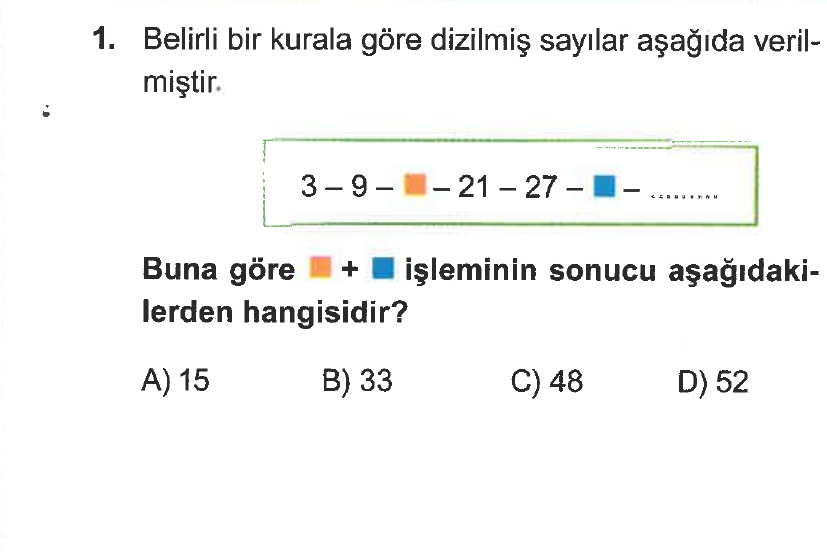Cevap ve çözüm: C481. Sabit fark 6'dır: 3, 9, 15, 21, 27, 33 dizisini yazarız. 2. Turuncu kutu 3. terim: 15. Mavi kutu 6. terim: 33. 3. 15 + 33 = 48 bulunur. Doğru Cevap: 48
5. Sınıf · KTT · Sayfa 1 / Soru 2Kolay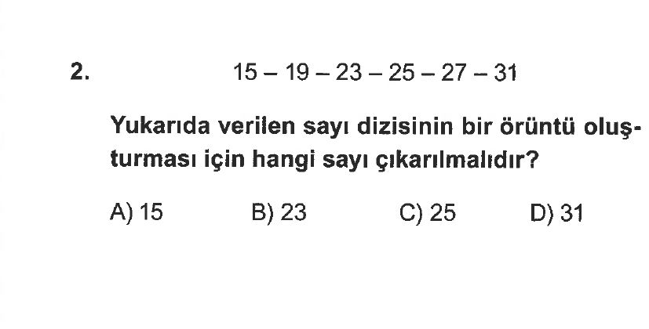Cevap ve çözüm: C251. Dizi 15-19-23-25-27-31 olarak verilmiş. 2. 25 sayısı çıkarılırsa 15, 19, 23, 27, 31 kalır ve ardışık fark hep 4 olur. 3. Bu yüzden çıkarılması gereken sayı 25'tir. Doğru Cevap: 25
5. Sınıf · KTT · Sayfa 1 / Soru 3Kolay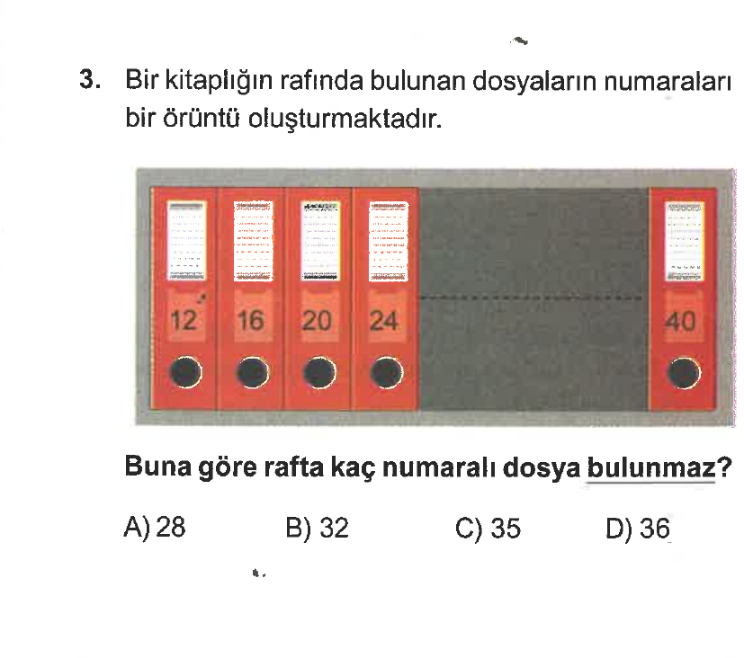Cevap ve çözüm: C351. Dosya numaraları 12'den başlayıp 4'er artıyor: 12, 16, 20, 24, 28, 32, 36, 40. 2. Bu örüntüdeki her sayı 12'den başlayarak 4'ün katları şeklinde ilerler. 3. 35 sayısı bu örüntüye uymaz, çünkü 4'e tam bölünmez; diğer seçenekler (28, 32, 36) örüntüye uyar. Doğru Cevap: 35
5. Sınıf · KTT · Sayfa 1 / Soru 4Kolay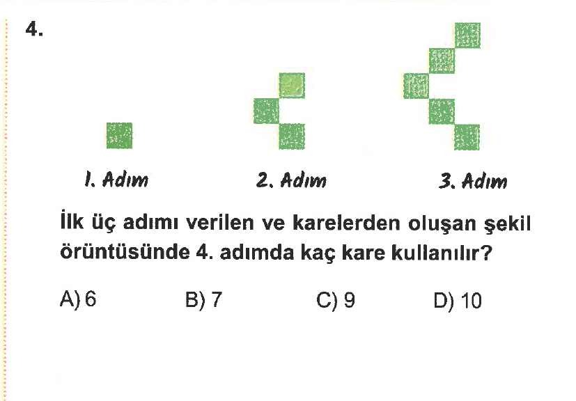Cevap ve çözüm: B7Kare sayıları 1, 3, 5 şeklindedir. Kural 2n−1 olduğundan 4. adımda 7 kare vardır.
5. Sınıf · KTT · Sayfa 1 / Soru 5Kolay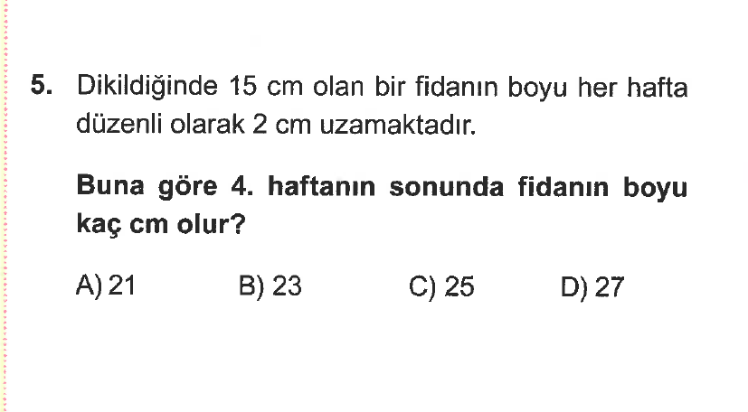Cevap ve çözüm: B231. Fidan dikildiğinde 15 cm'dir ve her hafta 2 cm uzar. 2. 4. haftanın sonunda toplam uzama: 4 × 2 = 8 cm. 3. Fidanın son boyu: 15 + 8 = 23 cm. Doğru Cevap: 23
5. Sınıf · KTT · Sayfa 1 / Soru 6Kolay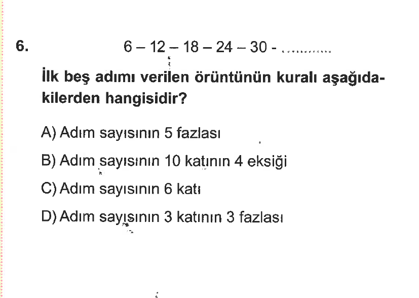Cevap ve çözüm: CAdım sayısının 6 katı1. Dizi 6, 12, 18, 24, 30 şeklinde verilmiş, her terim bir öncekinden 6 fazla. 2. 1. adım 6×1=6, 2. adım 6×2=12; yani her terim adım sayısının 6 katına eşit. 3. Bu yüzden kural 'Adım sayısının 6 katı'dır. Doğru Cevap: Adım sayısının 6 katı
5. Sınıf · KTT · Sayfa 2 / Soru 7Kolay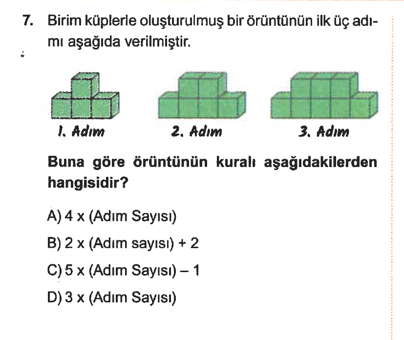Cevap ve çözüm: B2 x (Adım sayısı) + 2Küp sayıları 4, 6, 8 şeklindedir. Her adımda 2 küp eklenir; genel kural 2n+2 olur.
5. Sınıf · KTT · Sayfa 2 / Soru 8Kolay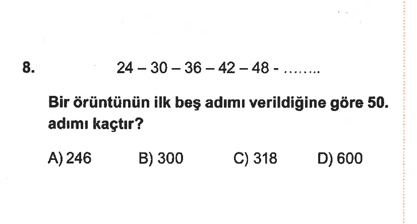Cevap ve çözüm: C3181. Dizi 24, 30, 36, 42, 48 şeklinde, sabit fark 6. 2. Genel terim: 6×(Adım Sayısı) + 18 (1. terim için 6×1+18=24 doğrulanır). 3. 50. adım için: 6×50 + 18 = 318. Doğru Cevap: 318
5. Sınıf · KTT · Sayfa 2 / Soru 9Kolay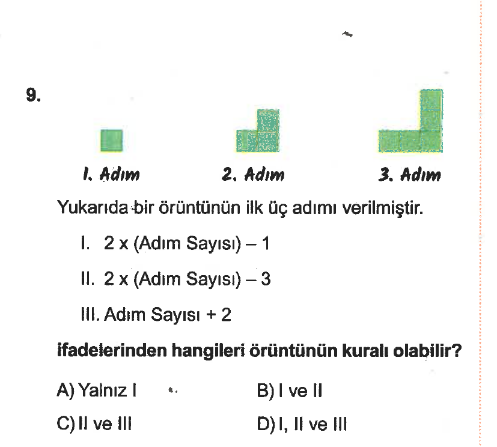Cevap ve çözüm: AYalnız IKare sayıları 1, 3, 5 şeklindedir. Yalnız I, yani 2n−1 bu sayıları verir.
5. Sınıf · KTT · Sayfa 2 / Soru 10Kolay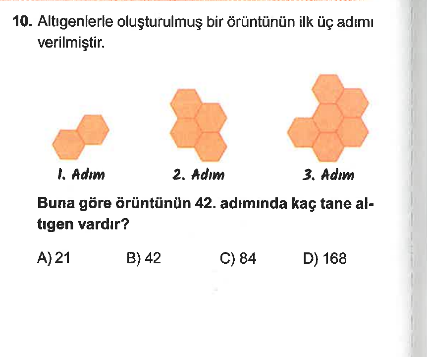Cevap ve çözüm: C84Altıgen sayıları 2, 4, 6 şeklindedir. Genel kural 2n; 42. adımda 84 altıgen vardır.
5. Sınıf · KTT · Sayfa 2 / Soru 11Kolay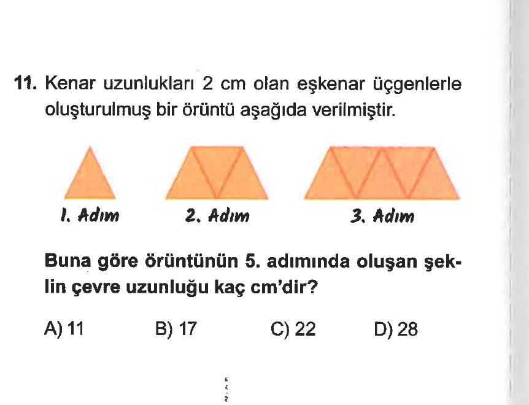Cevap ve çözüm: C22Şeritte 1, 3, 5 üçgen vardır. n. adımda dış sınır 2n+1 tane 2 cm kenardan oluşur. 5. adımın çevresi (2×5+1)×2=22 cm olur.
5. Sınıf · KTT · Sayfa 2 / Soru 12Kolay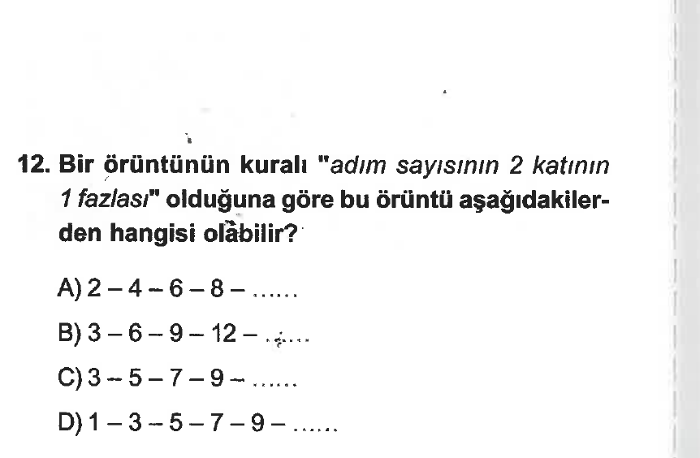Cevap ve çözüm: C3-5-7-9-...1. Kural 'adım sayısının 2 katının 1 fazlası' cebirsel olarak 2n + 1'dir. 2. n=1,2,3,4 için: 2(1)+1=3, 2(2)+1=5, 2(3)+1=7, 2(4)+1=9. 3. Bu değerler 3-5-7-9-... dizisini oluşturur. Doğru Cevap: 3-5-7-9-...
5. Sınıf · YGT · Sayfa 3 / Soru 1Orta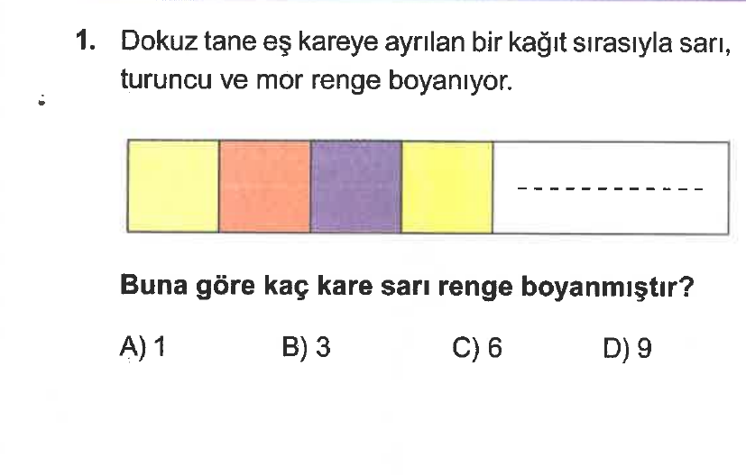Cevap ve çözüm: B31. 9 kare sırasıyla sarı, turuncu, mor renklerinin tekrarıyla boyanıyor (3'lük döngü). 2. 9 karede bu döngü tam 3 kez tekrar eder: sarı-turuncu-mor, sarı-turuncu-mor, sarı-turuncu-mor. 3. Her döngüde 1 sarı kare olduğundan toplam 3 kare sarıya boyanmıştır. Doğru Cevap: 3
5. Sınıf · YGT · Sayfa 3 / Soru 2Orta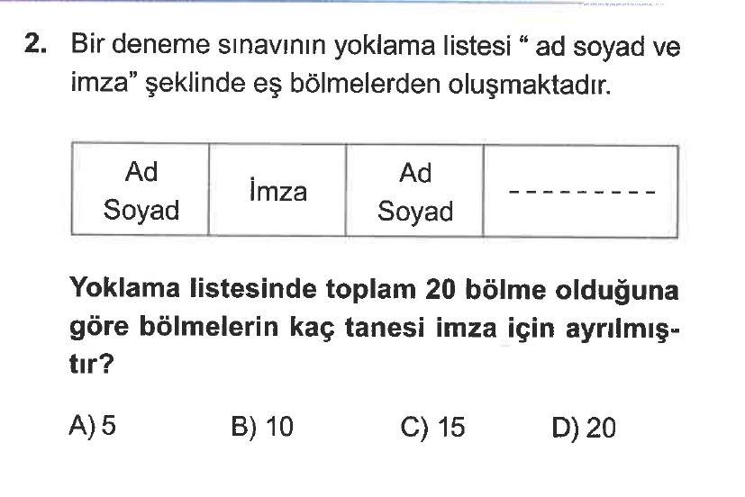Cevap ve çözüm: B101. Yoklama listesi 'Ad Soyad, İmza' şeklinde 2'lik bir döngüyle devam ediyor. 2. 20 bölmenin yarısı Ad Soyad'a, yarısı İmza'ya ayrılmıştır. 3. İmza için ayrılan bölme sayısı: 20 ÷ 2 = 10. Doğru Cevap: 10
5. Sınıf · YGT · Sayfa 3 / Soru 3Orta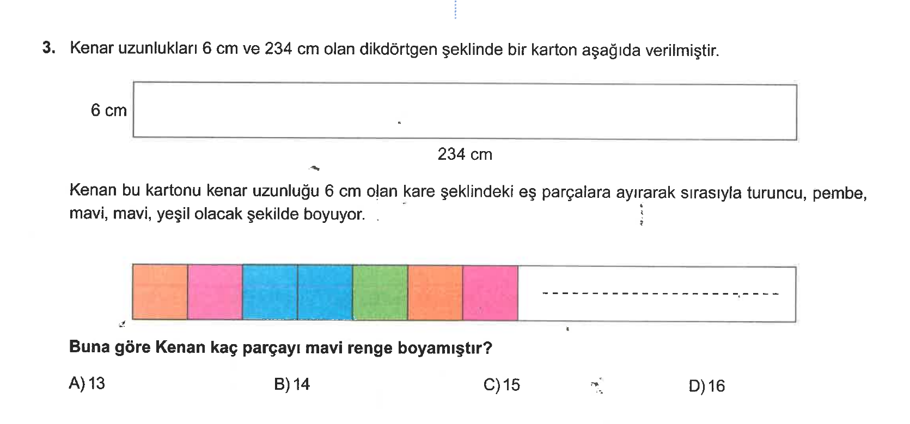Cevap ve çözüm: D161. Karton 234 ÷ 6 = 39 eş kareye bölünmüştür. 2. Renkler 5'lik bir döngüyle tekrar ediyor: turuncu, pembe, mavi, mavi, yeşil (her döngüde 2 mavi kare). 3. 39 = 7×5 + 4 olduğundan 7 tam döngüde 14 mavi, kalan 4 parçada (turuncu, pembe, mavi, mavi) 2 mavi daha vardır; toplam 16 mavi kare. Doğru Cevap: 16
5. Sınıf · YGT · Sayfa 4 / Soru 4Orta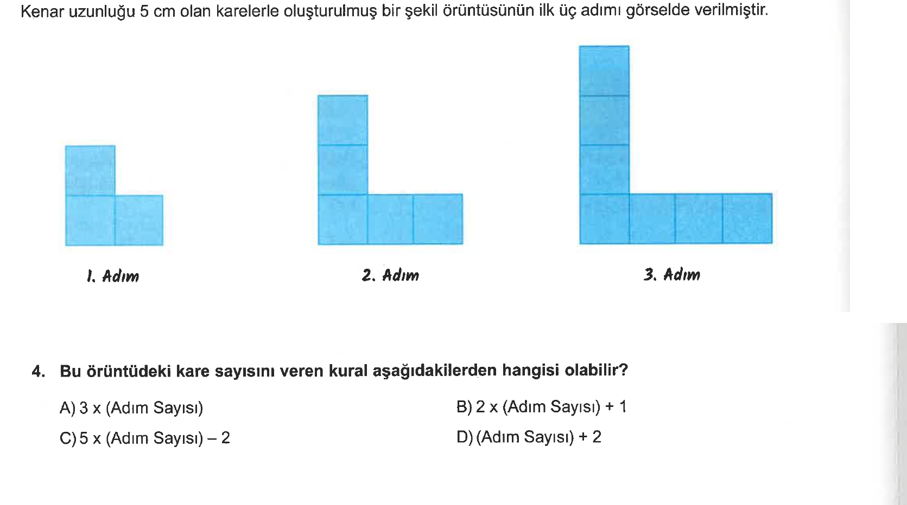Cevap ve çözüm: B2 x (Adım Sayısı) + 1L şeklindeki kare sayıları 3, 5, 7 şeklindedir. Genel kural 2n+1 olur.
5. Sınıf · YGT · Sayfa 4 / Soru 5Orta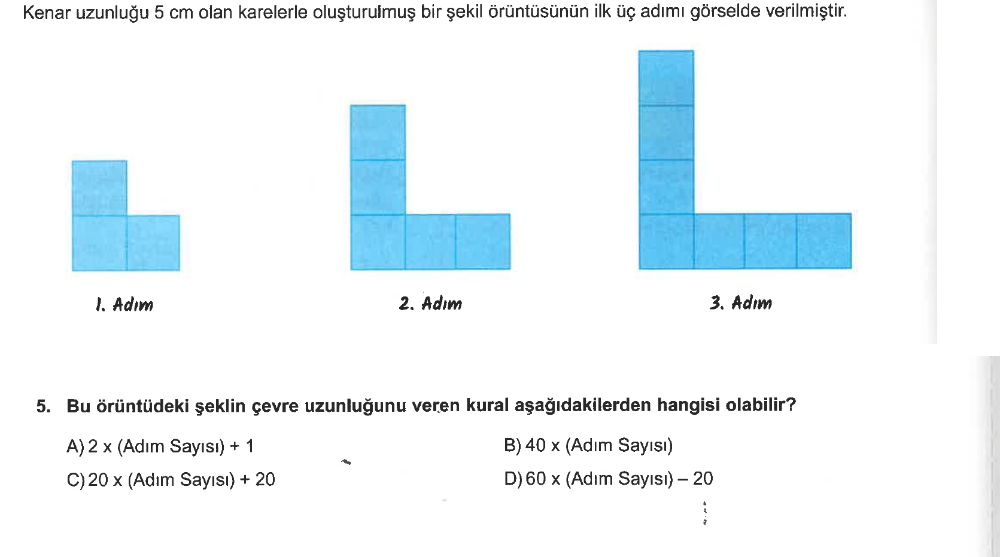Cevap ve çözüm: C20 x (Adım Sayısı) + 20L şeklinin iki kolu n+1 kare uzunluğundadır. Dış sınırda 4n+4 tane 5 cm kenar bulunur: çevre 20n+20 cm olur.
5. Sınıf · YGT · Sayfa 4 / Soru 6Orta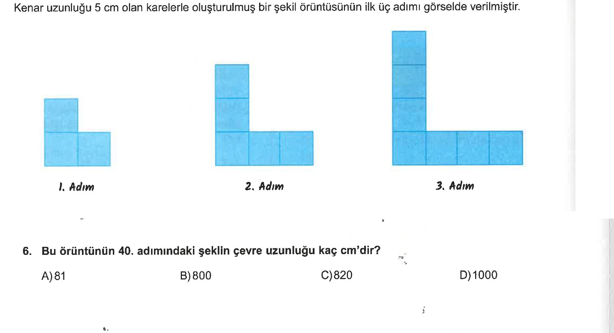Cevap ve çözüm: C820Ortak görselde çevre kuralı 20n+20 cm olur. 40. adımda 20×40+20=820 cm bulunur.
5. Sınıf · BTT · Sayfa 5 / Soru 1Zor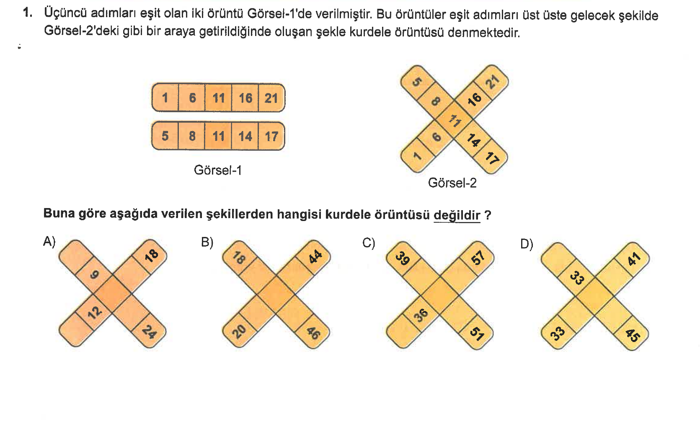Cevap ve çözüm: CC seçeneğiKurdelede iki aritmetik dizinin üçüncü terimleri eşit olmalıdır. A: merkez 14, B: merkez 32, D: merkez 37 her iki kolda aynıdır. C: 39 ve 51 uçlarının merkezi 45; diğer kolda 36 ikinci, 57 beşinci terimdir ve merkez 43 olur. Merkezler farklı olduğundan C kurdele örüntüsü değildir.
5. Sınıf · BTT · Sayfa 5 / Soru 2Zor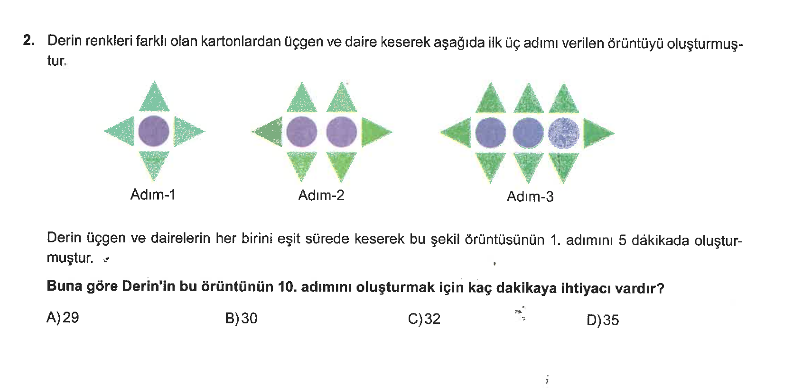Cevap ve çözüm: C321. adımda 4 üçgen ve 1 daire, toplam 5 parça vardır. Her parça 1 dakikada kesilir. n. adımda 2n+2 üçgen ve n daire vardır; toplam 3n+2 parça olur. 10. adım 32 dakika sürer.
5. Sınıf · BTT · Sayfa 6 / Soru 3Zor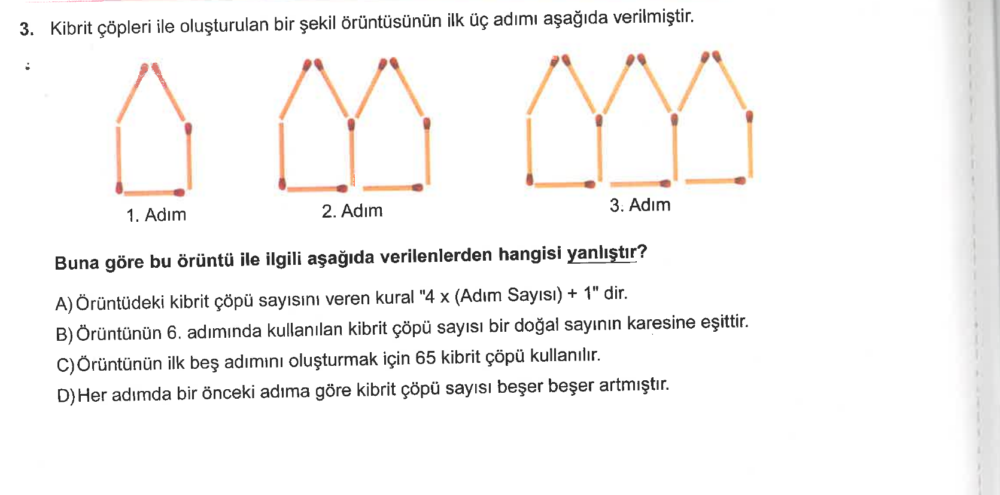Cevap ve çözüm: DHer adımda bir önceki adıma göre kibrit çöpü sayısı beşer beşer artmıştır.1. Kural '4×(Adım Sayısı) + 1' doğruysa adımlar sırasıyla 5, 9, 13, 17, 21, 25 kibrit çöpü kullanır. 2. 6. adım = 25 = 5², yani bir doğal sayının karesidir (B doğru); ilk 5 adım toplamı 5+9+13+17+21=65 (C doğru). 3. Her adımdaki artış miktarı sabit 4'tür, 5 değil; bu yüzden 'beşer beşer artmıştır' ifadesi (D) yanlıştır. Doğru Cevap: Her adımda bir önceki adıma göre kibrit çöpü sayısı beşer beşer artmıştır.
5. Sınıf · BTT · Sayfa 6 / Soru 4Zor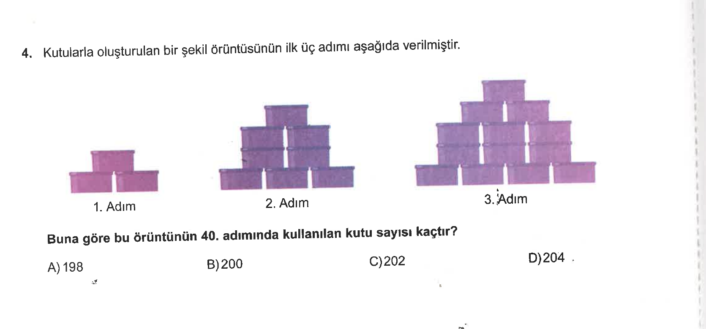Cevap ve çözüm: A198Görselde kutu sayıları 3, 8, 13 olur (ikinci ve üçüncü yapıda yinelenen orta sıralar vardır). Her adımda 5 kutu eklenir. Kural 5n−2; 40. adımda 198 kutu vardır.
6. Sınıf · KKT · Sayfa 1 / Soru 1Kolay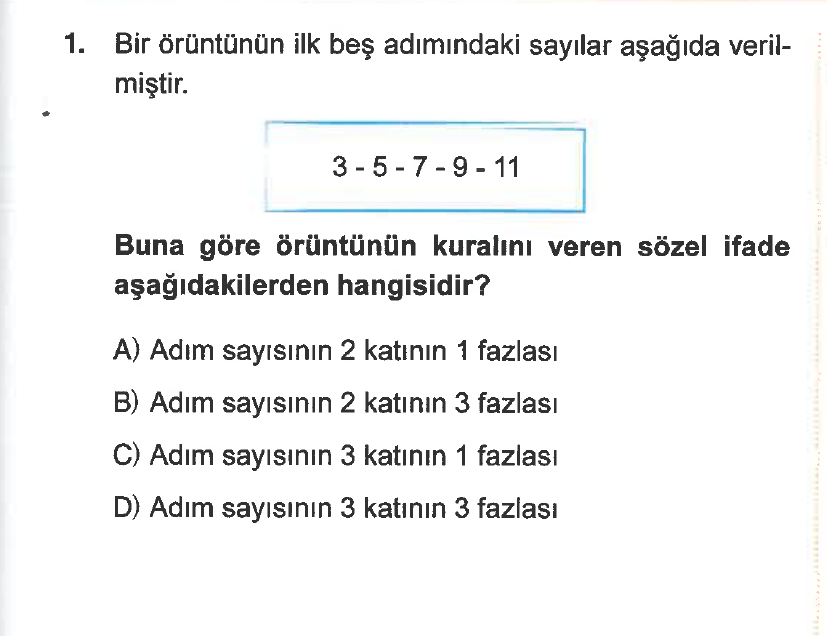Cevap ve çözüm: AAdım sayısının 2 katının 1 fazlası1. Dizi 3,5,7,9,11 şeklinde her terim bir öncekinden 2 fazla. 2. 1. terim=3=2(1)+1, 2. terim=5=2(2)+1 şeklinde kural 2n+1 olarak yazılabilir. 3. Bu kuralın sözel ifadesi 'Adım sayısının 2 katının 1 fazlası'dır. Doğru Cevap: Adım sayısının 2 katının 1 fazlası
6. Sınıf · KKT · Sayfa 1 / Soru 2Kolay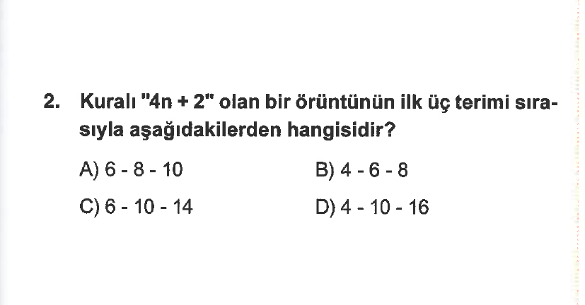Cevap ve çözüm: C6 - 10 - 141. Kural 4n+2'de n yerine 1, 2, 3 yazılır. 2. n=1: 4(1)+2=6, n=2: 4(2)+2=10, n=3: 4(3)+2=14. 3. İlk üç terim: 6-10-14. Doğru Cevap: 6 - 10 - 14
6. Sınıf · KKT · Sayfa 1 / Soru 3Kolay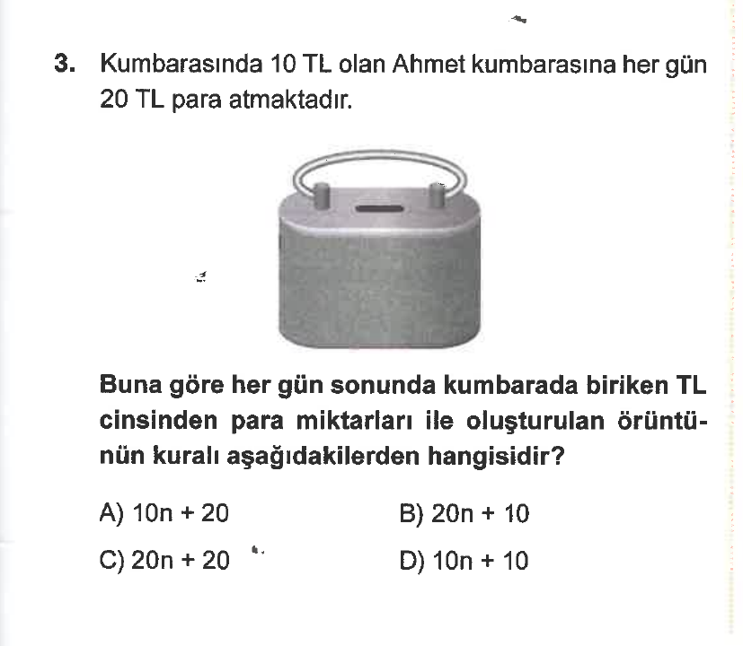Cevap ve çözüm: B20n + 101. Ahmet'in kumbarasında başlangıçta 10 TL var ve her gün 20 TL ekliyor. 2. 1. gün sonunda: 10+20=30 TL. 2. gün sonunda: 10+40=50 TL. 3. 20n+10 kuralı denendiğinde n=1→30, n=2→50 çıkar; bu yüzden kural 20n+10'dur. Doğru Cevap: 20n + 10
6. Sınıf · KKT · Sayfa 1 / Soru 4Kolay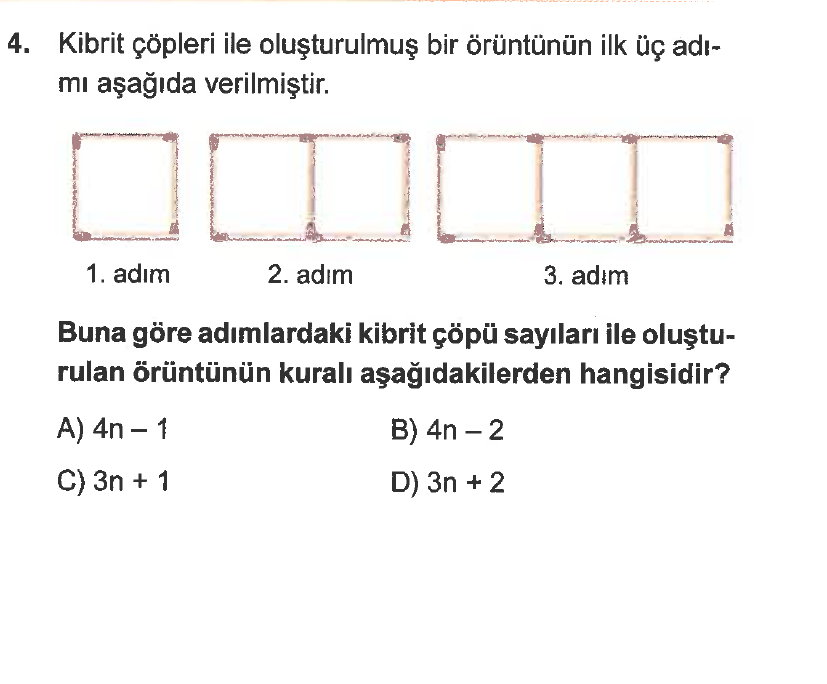Cevap ve çözüm: C3n + 11. Görseldeki her adımda bir kare daha ekleniyor ve kareler bitişik duruyor. 2. n bitişik kareden oluşan şeritte üst+alt yatay çöpler 2n, dikey bölme çöpleri n+1 tanedir. 3. Toplam kibrit çöpü = 2n + (n+1) = 3n+1. Doğru Cevap: 3n + 1
6. Sınıf · KKT · Sayfa 1 / Soru 5Kolay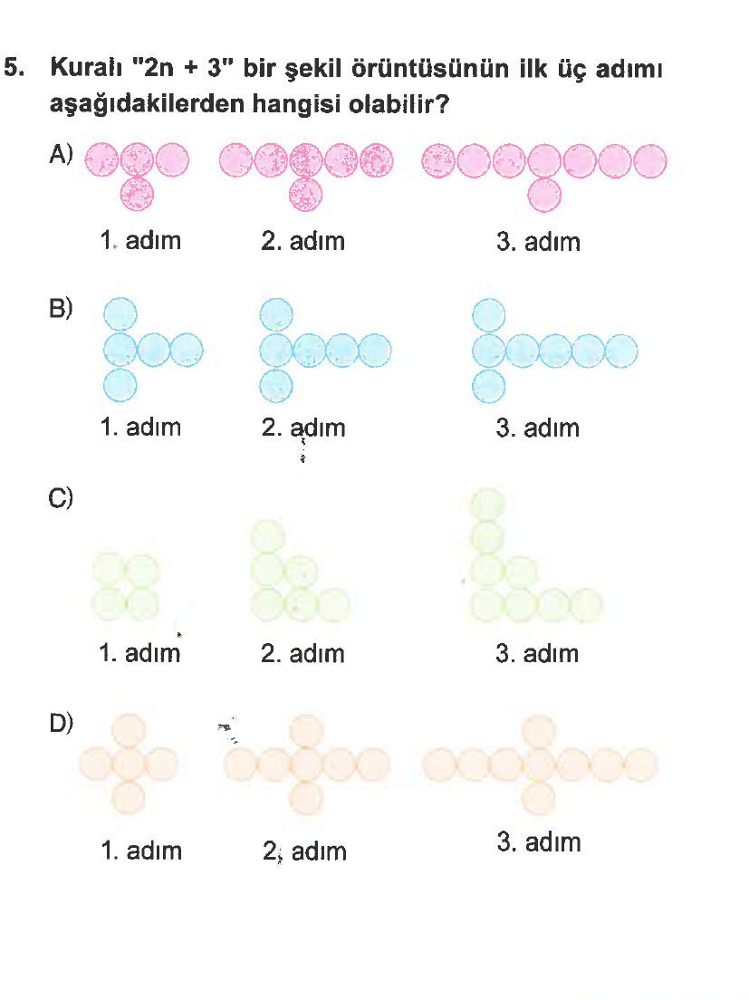Cevap ve çözüm: DD seçeneği2n+3 kuralı ilk üç adımda 5, 7, 9 daire verir. Görselde D seçeneği sırasıyla 5, 7, 9 daire içerir.
6. Sınıf · KKT · Sayfa 2 / Soru 6Kolay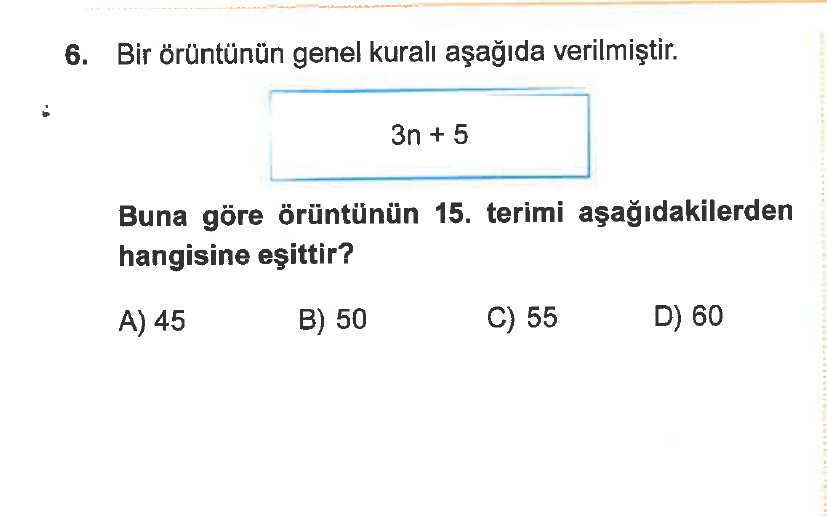Cevap ve çözüm: B501. Kural 3n+5'te n yerine 15 yazılır. 2. 3×15=45. 3. 45+5=50 bulunur. Doğru Cevap: 50
6. Sınıf · KKT · Sayfa 2 / Soru 7Kolay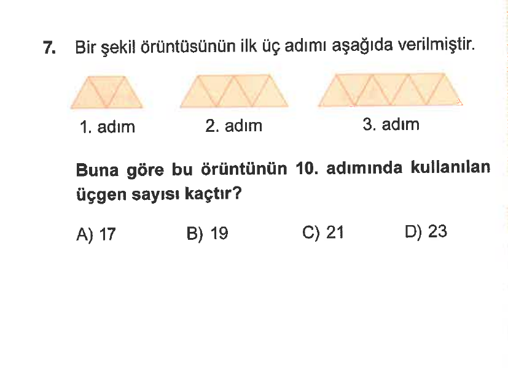Cevap ve çözüm: C211. Trapez şeklindeki üçgen şeritlerinde üçgen sayısı genelde 2n+1 kuralına uyar. 2. n=1,2,3 için 3,5,7 üçgen olması bu kuralla tutarlıdır. 3. 10. adım için: 2×10+1=21 üçgen kullanılır. Doğru Cevap: 21
6. Sınıf · KKT · Sayfa 2 / Soru 8Kolay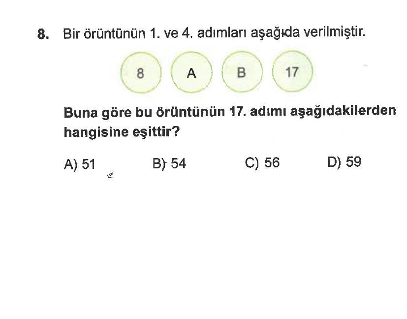Cevap ve çözüm: C561. 1. adım 8, 4. adım 17 olarak verilmiş; aradaki fark 3 adımda 9'dur, yani sabit fark 3'tür. 2. Kural: 3n+5 (n=1 için 3+5=8 doğrulanır). 3. 17. adım için: 3×17+5=51+5=56. Doğru Cevap: 56
6. Sınıf · KKT · Sayfa 2 / Soru 9Kolay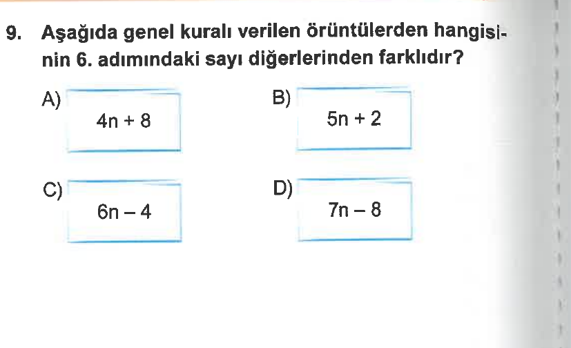Cevap ve çözüm: D7n - 81. Her kuralda n=6 yazılarak sonuçlar karşılaştırılır. 2. 4n+8=32, 5n+2=32, 6n-4=32, 7n-8=34. 3. İlk üç kural aynı sonucu (32) verirken 7n-8 farklı (34) sonuç verir. Doğru Cevap: 7n - 8
6. Sınıf · KKT · Sayfa 2 / Soru 10Kolay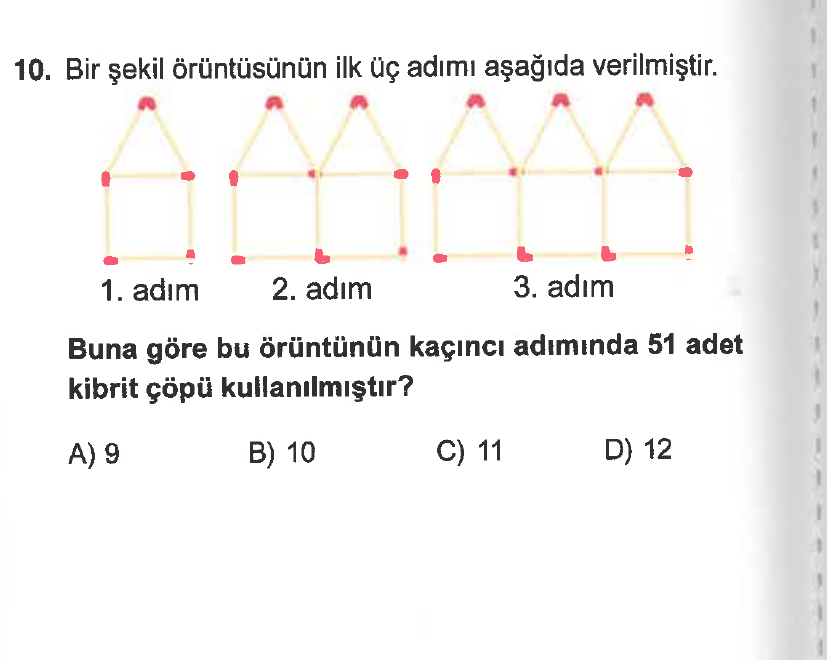Cevap ve çözüm: B10İlk ev 6 kibrit çöpünden oluşur; her yeni ev ortak kenar nedeniyle 5 çöp ekler. Kural 5n+1 olur. 5n+1=51 denklemi n=10 verir.
6. Sınıf · KKT · Sayfa 2 / Soru 11Kolay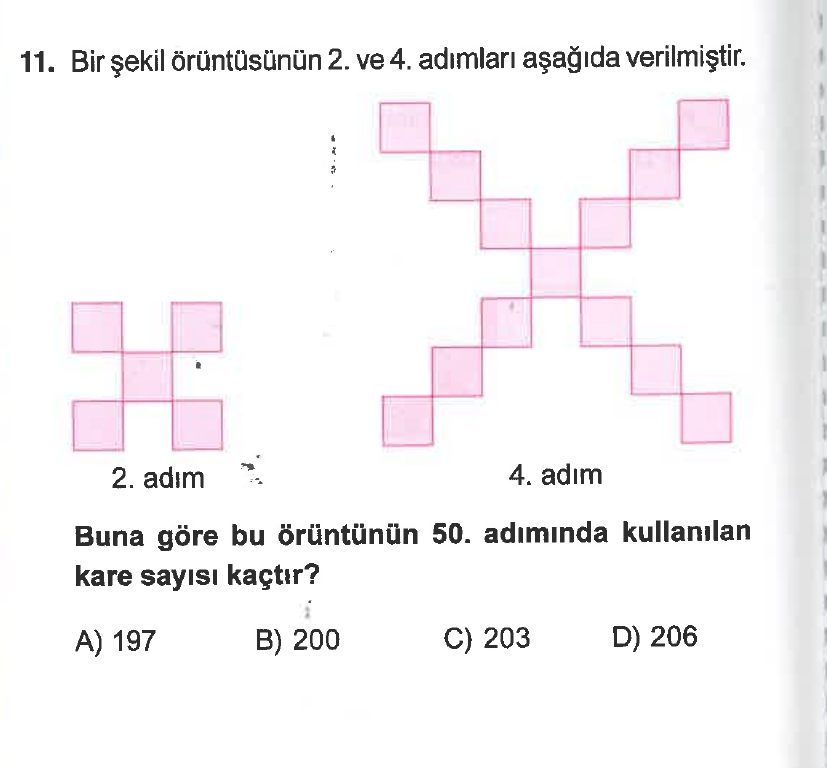Cevap ve çözüm: A1971. Görseldeki haç (artı) şeklinin merkezi kare sayısı örüntülerinde kural genelde 4n-3'tür (1, 5, 9, 13, ...). 2. n=50 için: 4×50-3=200-3=197. 3. 50. adımda 197 kare kullanılır. Doğru Cevap: 197
6. Sınıf · KKT · Sayfa 3 / Soru 1Kolay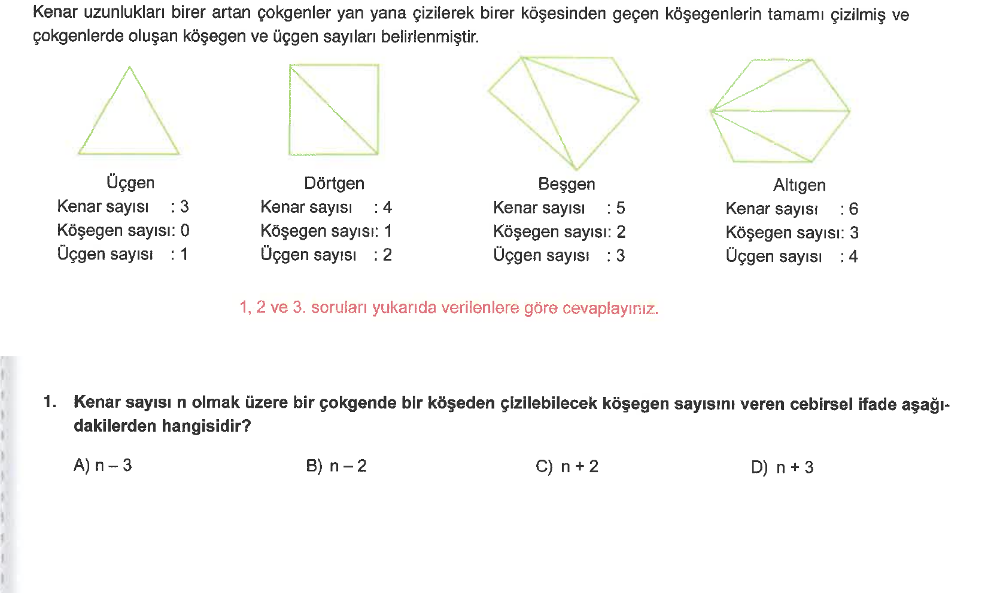Cevap ve çözüm: An - 31. Tablodaki verilere bakılır: üçgen(n=3)→0, dörtgen(n=4)→1, beşgen(n=5)→2, altıgen(n=6)→3 köşegen. 2. Bu değerler n-3 kuralına uyar. 3. Bu yüzden bir köşeden çizilebilecek köşegen sayısı n-3'tür. Doğru Cevap: n - 3
6. Sınıf · KKT · Sayfa 3 / Soru 2Kolay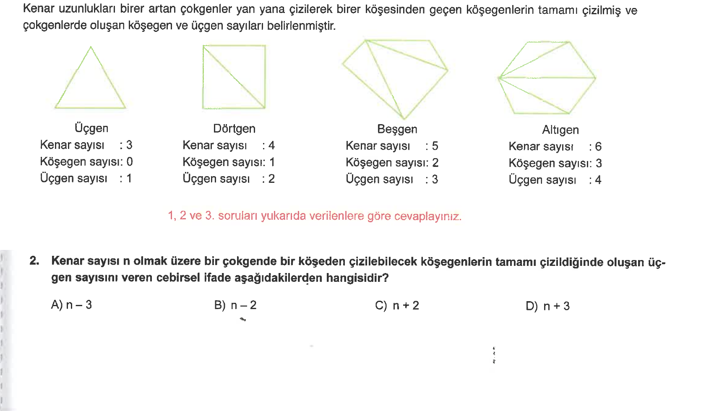Cevap ve çözüm: Bn - 21. Tablodaki üçgen sayıları: n=3→1, n=4→2, n=5→3, n=6→4. 2. Bu değerler n-2 kuralına uyar. 3. Bu yüzden oluşan üçgen sayısı n-2'dir. Doğru Cevap: n - 2
6. Sınıf · KKT · Sayfa 3 / Soru 3Kolay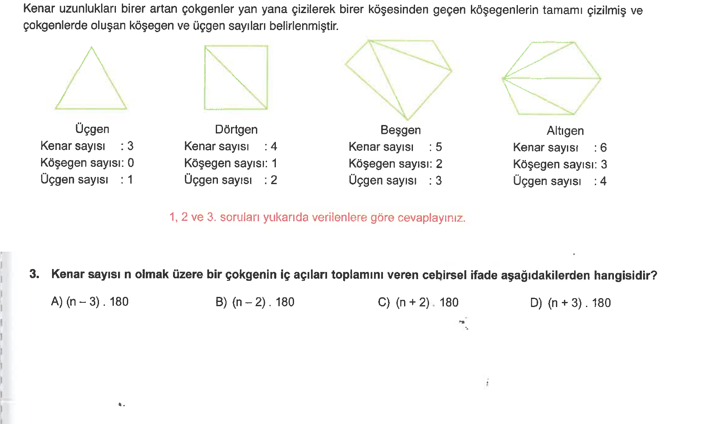Cevap ve çözüm: B(n - 2) . 1801. Bir çokgenin iç açılar toplamı, çokgenin (n-2) tane üçgene bölünebilmesinden gelir. 2. Her üçgenin iç açı toplamı 180° olduğundan toplam (n-2)×180° olur. 3. Bu yüzden kural (n-2).180'dir. Doğru Cevap: (n - 2) . 180
6. Sınıf · KKT · Sayfa 4 / Soru 4Kolay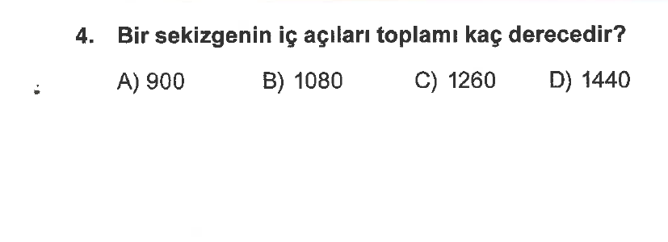Cevap ve çözüm: B10801. Sekizgende n=8'dir. 2. İç açılar toplamı formülü: (n-2)×180. 3. (8-2)×180 = 6×180 = 1080°. Doğru Cevap: 1080
6. Sınıf · KKT · Sayfa 4 / Soru 5Kolay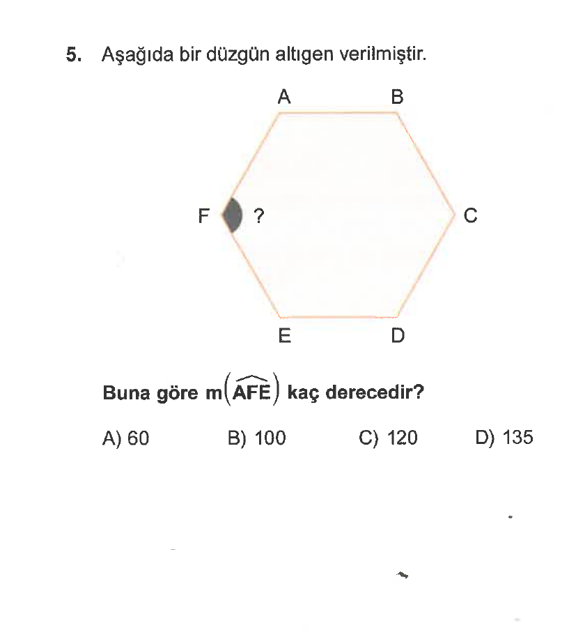Cevap ve çözüm: C120Düzgün altıgende bir iç açı (6−2)×180/6=120° olur.
6. Sınıf · KKT · Sayfa 4 / Soru 6Kolay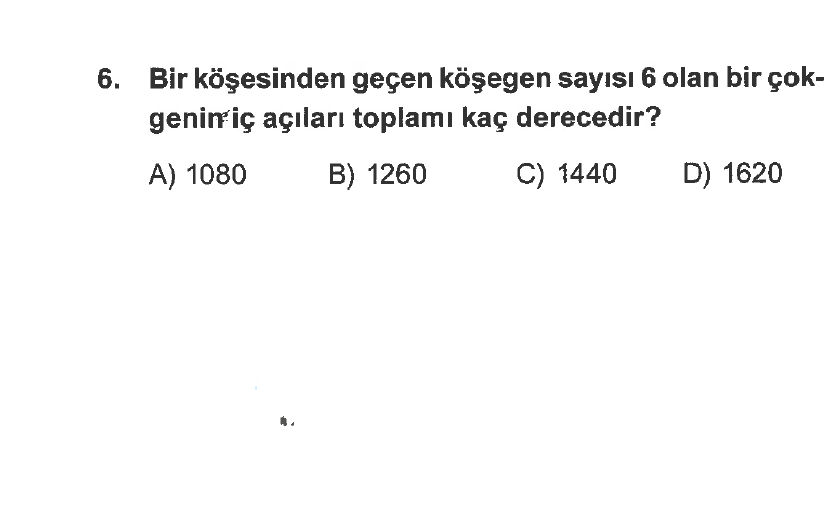Cevap ve çözüm: B12601. Bir köşeden çizilebilecek köşegen sayısı n-3'tür; bu değer 6 olarak verilmiş. 2. n-3=6 → n=9. 3. İç açılar toplamı: (9-2)×180=7×180=1260°. Doğru Cevap: 1260
6. Sınıf · KKT · Sayfa 4 / Soru 7Kolay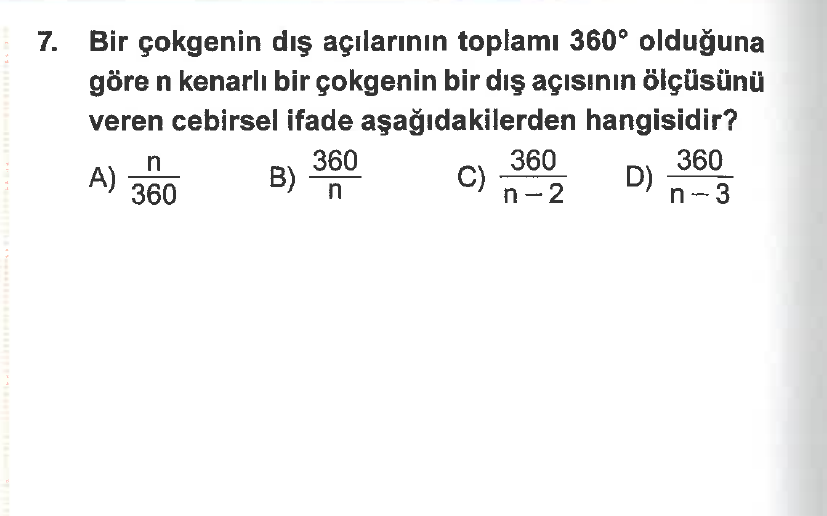Cevap ve çözüm: B360 / n1. Düzgün bir çokgende dış açıların toplamı her zaman 360°'dir. 2. Bu toplam n eşit parçaya (her köşede bir dış açı) bölünür. 3. Bir dış açının ölçüsü: 360/n. Doğru Cevap: 360 / n
6. Sınıf · KKT · Sayfa 4 / Soru 8Kolay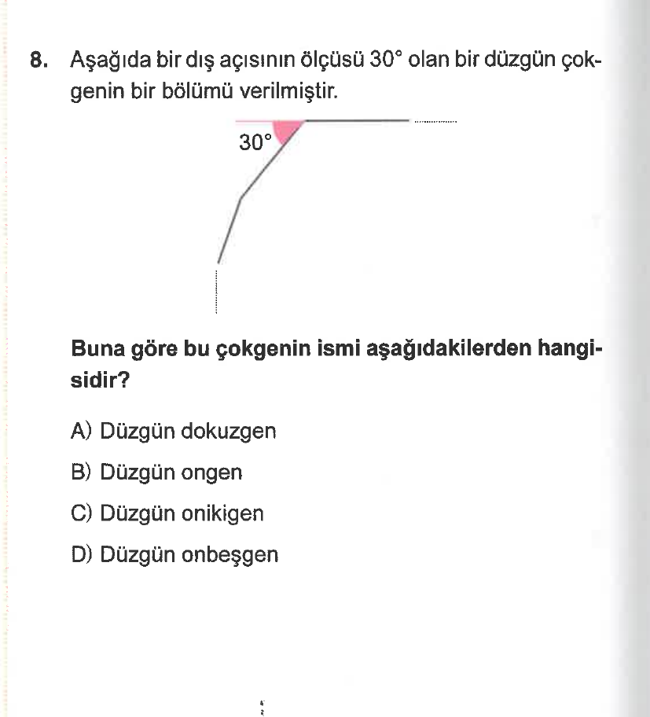Cevap ve çözüm: CDüzgün onikigen1. Dış açı 30° olarak verilmiş ve dış açılar toplamı 360°'dir. 2. Kenar sayısı: n=360/30=12. 3. 12 kenarlı düzgün çokgenin adı düzgün onikigendir. Doğru Cevap: Düzgün onikigen
6. Sınıf · KKT · Sayfa 4 / Soru 9Kolay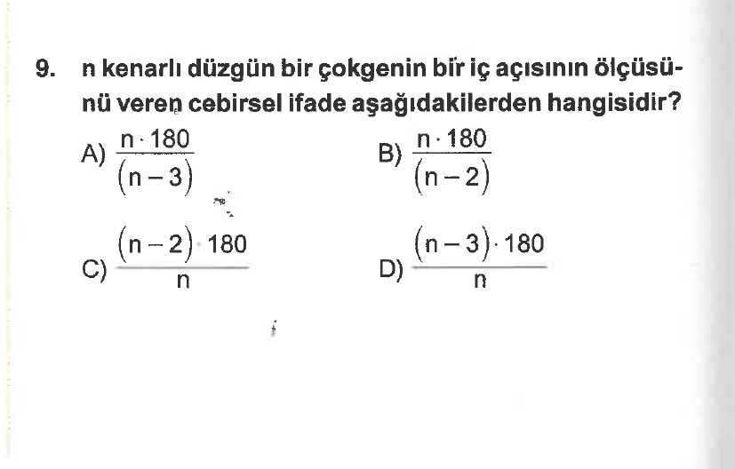Cevap ve çözüm: C(n-2) . 180 / n1. İç açılar toplamı (n-2)×180'dir ve bu toplam n eşit köşeye paylaştırılır (düzgün çokgen olduğu için). 2. Bir iç açının ölçüsü: [(n-2)×180] / n. 3. Bu yüzden doğru ifade (n-2).180/n'dir. Doğru Cevap: (n-2) . 180 / n
6. Sınıf · YGT · Sayfa 5 / Soru 1Orta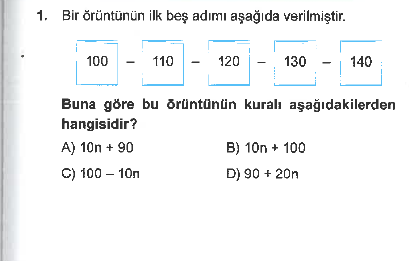Cevap ve çözüm: A10n + 901. Dizi 100,110,120,130,140 şeklinde sabit fark 10'dur. 2. n=1 için terim 100 olmalı; 10n+90 kuralı denendiğinde 10(1)+90=100 çıkar. 3. Bu yüzden kural 10n+90'dır. Doğru Cevap: 10n + 90
6. Sınıf · YGT · Sayfa 5 / Soru 2Orta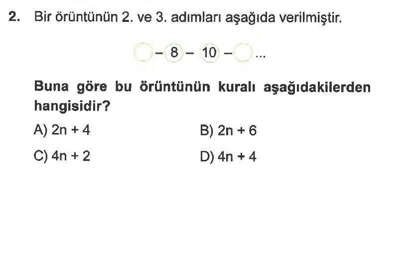Cevap ve çözüm: A2n + 41. 2. adım 8, 3. adım 10 olarak verilmiş; aradaki fark 2'dir. 2. 2n+4 kuralı denendiğinde n=2→8, n=3→10 çıkar. 3. Bu yüzden kural 2n+4'tür. Doğru Cevap: 2n + 4
6. Sınıf · YGT · Sayfa 5 / Soru 3Orta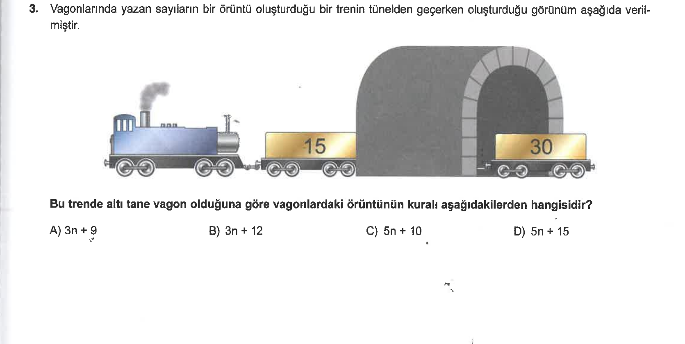Cevap ve çözüm: B3n + 12Altı vagonun ilkinde 15, sonuncusunda 30 vardır. Beş aralıkta artış 15 olduğundan adım farkı 3 olur. Genel kural 15+3(n−1)=3n+12 olur.
6. Sınıf · YGT · Sayfa 6 / Soru 4Orta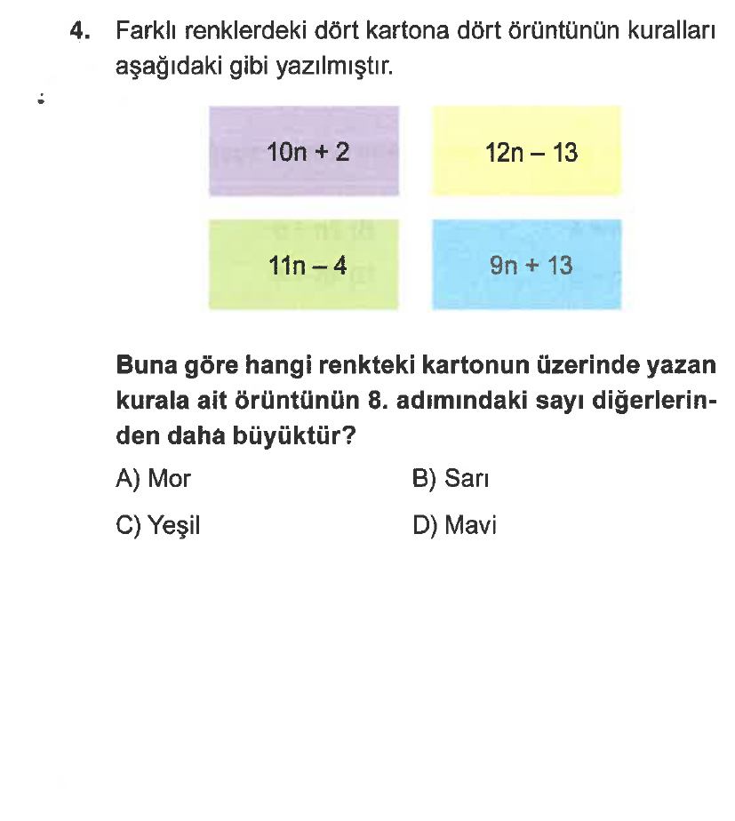Cevap ve çözüm: DMavi1. Her kartondaki kuralda n=8 yazılır. 2. Mor: 10(8)+2=82. Sarı: 12(8)-13=83. Yeşil: 11(8)-4=84. Mavi: 9(8)+13=85. 3. En büyük değer 85 ile Mavi renktedir. Doğru Cevap: Mavi
6. Sınıf · YGT · Sayfa 6 / Soru 5Orta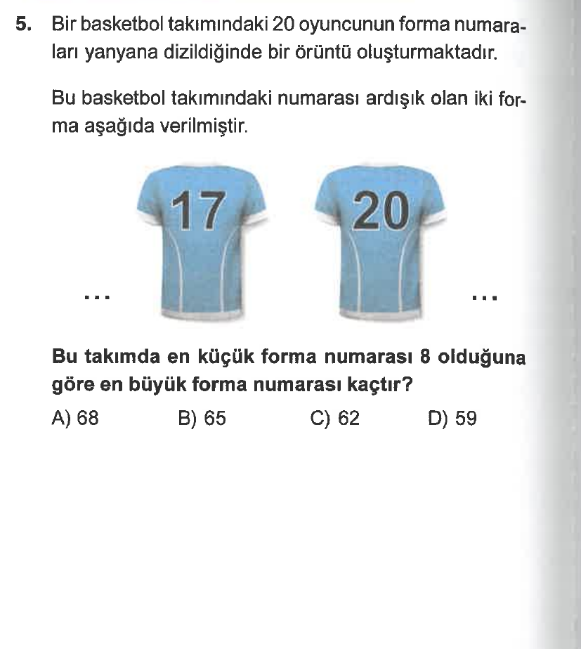Cevap ve çözüm: B651. Ardışık iki forma numarası 17 ve 20 olduğuna göre sabit fark 3'tür. 2. En küçük forma numarası 8 (1. oyuncu) ise 20. oyuncunun numarası: 8 + 3×(20-1). 3. 8 + 3×19 = 8+57 = 65. Doğru Cevap: 65
6. Sınıf · YGT · Sayfa 6 / Soru 6Orta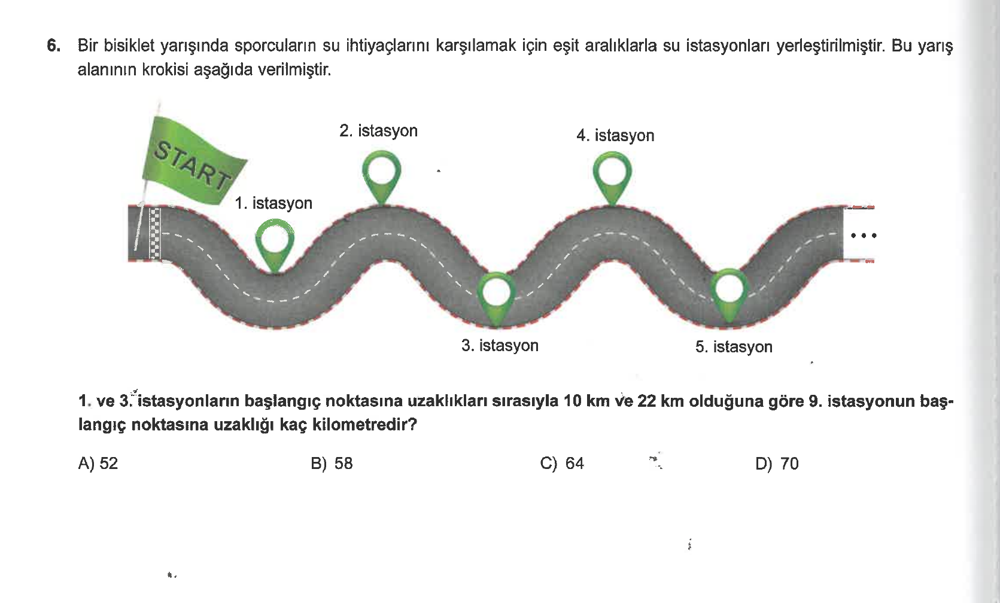Cevap ve çözüm: B581. 1. istasyon 10 km, 3. istasyon 22 km; aradaki fark 2 istasyonda 12 km, yani sabit fark 6 km'dir. 2. Kural: 6n+4 (n=1 için 6+4=10 doğrulanır). 3. 9. istasyon için: 6×9+4=54+4=58 km. Doğru Cevap: 58
6. Sınıf · BTT · Sayfa 7 / Soru 1Zor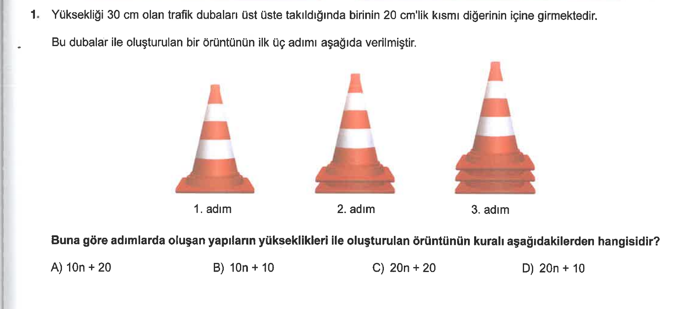Cevap ve çözüm: A10n + 201. Dubalar üst üste takıldığında her ekleme yükseklik olarak sadece 30-20=10 cm katkı sağlar. 2. 1 duba tek başına 30 cm'dir; her ek duba 10 cm daha ekler. 3. Kural: 10n+20 (n=1 için 10+20=30 doğrulanır). Doğru Cevap: 10n + 20
6. Sınıf · BTT · Sayfa 7 / Soru 2Zor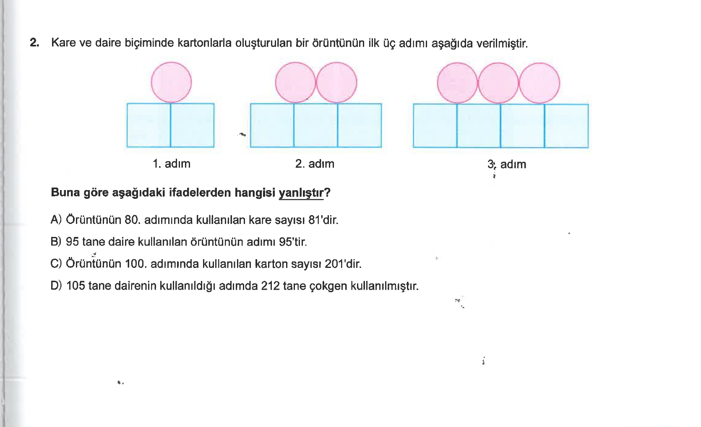Cevap ve çözüm: D105 tane dairenin kullanıldığı adımda 212 tane köşesi olan karton kullanılmıştır.n. adımda n daire ve n+1 kare vardır. 105 daire kullanılan adımda 106 kare ve bu karelerin toplam 424 köşesi bulunur. 212 köşe ifadesi yanlıştır; diğer ifadeler doğrudur.
6. Sınıf · BTT · Sayfa 8 / Soru 3ZorCevap ve çözüm: C4281. Adım n'de n tane sarı (10cm) ve (n-1) tane mavi (12cm) kutu olduğu varsayılıyor. 2. Yükseklik = 10n + 12(n-1) = 22n - 12. 3. 20. adım için: 22×20-12=440-12=428 cm. Doğru Cevap: 428
6. Sınıf · BTT · Sayfa 8 / Soru 4ZorCevap ve çözüm: B421. Saat 12.00'de 20 ml, saat 14.00'te 24 ml ölçülmüş; 2 saatte 4 ml artış olduğuna göre saatte 2 ml artıyor. 2. 06.00'da ölçülen ilk değer: 20 - 6×2 = 8 ml (06.00'dan 12.00'ye 6 saat var). 3. 23.00, 06.00'dan 17 saat sonra olduğundan: 8 + 17×2 = 42 ml. Doğru Cevap: 42
7. Sınıf · KKT · Sayfa 1 / Soru 1KolayCevap ve çözüm: C281. Kartlardaki 16, 23, 30, 37 sayıları incelendiğinde aralarında sabit 7 fark olduğu görülür. 2. 16, 23, 30, 37 dizisi düzgün bir aritmetik dizi oluşturur. 3. 28 sayısı bu diziye uymadığından örüntüye ait olmayan terimdir. Doğru Cevap: 28
7. Sınıf · KKT · Sayfa 1 / Soru 2KolayCevap ve çözüm: B5^31. Kural 8n-3'te n=16 yazılır. 2. 8×16-3=128-3=125. 3. 125=5³ olduğundan doğru üslü ifade 5³'tür. Doğru Cevap: 5^3
7. Sınıf · KKT · Sayfa 1 / Soru 3KolayCevap ve çözüm: A5n - 11. Dizi 4,9,14,19,24 sabit fark 5 ile ilerliyor. 2. 5n-1 kuralı denendiğinde n=1→4, n=2→9 çıkar. 3. Bu yüzden genel kural 5n-1'dir. Doğru Cevap: 5n - 1
7. Sınıf · KKT · Sayfa 1 / Soru 4KolayCevap ve çözüm: C10, 16, 22, 28, 341. Kural 6n+4'te n=1,2,3,4,5 yazılır. 2. 6(1)+4=10, 6(2)+4=16, 6(3)+4=22, 6(4)+4=28, 6(5)+4=34. 3. İlk beş adım: 10,16,22,28,34. Doğru Cevap: 10, 16, 22, 28, 34
7. Sınıf · KKT · Sayfa 1 / Soru 5KolayCevap ve çözüm: D24 - 4n1. Dizi 20,16,12,8,4 azalarak gidiyor, sabit fark -4. 2. 24-4n kuralı denendiğinde n=1→24-4=20 çıkar ve dizi ile örtüşür. 3. Bu yüzden kural 24-4n'dir. Doğru Cevap: 24 - 4n
7. Sınıf · KKT · Sayfa 1 / Soru 6KolayCevap ve çözüm: B171. Kural 3n-2=49 denklemi kurulur. 2. 3n=51. 3. n=17 bulunur. Doğru Cevap: 17
7. Sınıf · KKT · Sayfa 2 / Soru 7KolayCevap ve çözüm: B-721. Kural 10-4n'de n=8 ve n=15 yazılır. 2. 8. adım: 10-32=-22. 15. adım: 10-60=-50. 3. Toplam: -22+(-50)=-72. Doğru Cevap: -72
7. Sınıf · KKT · Sayfa 2 / Soru 8KolayCevap ve çözüm: A151Boncuk sayıları 4, 7, 10 şeklindedir. Genel kural 3n+1; 50. adımda 151 boncuk vardır.
7. Sınıf · KKT · Sayfa 2 / Soru 9KolayCevap ve çözüm: C2n + 3Üçgen sayıları 5, 7, 9 şeklindedir. Her adımda 2 üçgen eklenir; kural 2n+3 olur.
7. Sınıf · KKT · Sayfa 2 / Soru 10KolayCevap ve çözüm: BGenel kuralı 7n + 5'tir.1. Fark = (26-5)/3 = 7, bu yüzden 'Artış miktarı 7'dir' ifadesi doğrudur. 2. Doğru genel kural 7n-2'dir (n=1 için 7-2=5 doğrulanır); '7n+5' ifadesi n=1 için 12 verir, bu yanlıştır. 3. 6. terim=7(6)-2=40 doğru, 3. terim (■)=7(3)-2=19 doğru; bu yüzden yanlış olan ifade 'Genel kuralı 7n+5'tir' cümlesidir. Doğru Cevap: Genel kuralı 7n + 5'tir.
7. Sınıf · KKT · Sayfa 2 / Soru 11KolayCevap ve çözüm: C121. Görseldeki haç (artı) şeklinde kare sayısı kuralı 4n-3'tür. 2. 4n-3=45 denklemi kurulur. 3. 4n=48 → n=12. Doğru Cevap: 12
7. Sınıf · KKT · Sayfa 2 / Soru 12KolayCevap ve çözüm: B16n - 241. Her kuralda n=1 yazılarak ilk terimler bulunur. 2. 10n-2→8, 16n-24→-8, 15-7n→8, 5n+3→8. 3. İlk üçü 8 verirken 16n-24 farklı (-8) bir değer verdiğinden ilk terimi farklı olan odur. Doğru Cevap: 16n - 24
7. Sınıf · YGT · Sayfa 3 / Soru 1OrtaCevap ve çözüm: B701. Adımlardaki çokgenlerin kenar sayısı kare(4), altıgen(6), sekizgen(8) şeklinde her adımda 2 artıyor: kural 2n+2. 2. 1'den 7'ye kadar her adımın kenar sayısı toplanır. 3. Bu toplam = 2×(1+2+...+7) + 2×7 = 56+14 = 70 kibrit çöpü. Doğru Cevap: 70
7. Sınıf · YGT · Sayfa 3 / Soru 2OrtaCevap ve çözüm: Aİki basamaklı en büyük asal sayıdır.İlk ev 5 kibrit çöpünden oluşur; çatının tabanında yatay çöp yoktur. Her yeni ev 4 çöp ekler. Kural 4n+1; 24. adımda 97 çöp vardır. 97 iki basamaklı en büyük asal sayıdır.
7. Sınıf · YGT · Sayfa 3 / Soru 3OrtaCevap ve çözüm: C91. Bal peteği zincirinde her yeni altıgen eklendiğinde 5 yeni kibrit çöpü eklenir (ilk altıgen 6 çöp, sonrakiler +5). 2. Kural: 5n+1 (n=1→6, n=2→11, n=3→16 doğrulanır). 3. 5n+1=46 → 5n=45 → n=9. Doğru Cevap: 9
7. Sınıf · YGT · Sayfa 4 / Soru 4OrtaCevap ve çözüm: C1041. Fidan dikildiğinde 24 cm'dir ve her ay 16 cm uzuyor. 2. 5 ayda toplam uzama: 5×16=80 cm. 3. Son boy: 24+80=104 cm. Doğru Cevap: 104
7. Sınıf · YGT · Sayfa 4 / Soru 5OrtaCevap ve çözüm: B6n + 41. Depoda başlangıçta 4 litre su var ve her dakika 6 litre ekleniyor. 2. n. dakika sonunda su miktarı: 4+6n. 3. 6n+4 kuralı denendiğinde n=1→10 çıkar, bu da 4+6=10 ile örtüşür. Doğru Cevap: 6n + 4
7. Sınıf · YGT · Sayfa 4 / Soru 6OrtaCevap ve çözüm: D191. 1. gün 12 TL, sonraki her gün 16 TL ekleniyor; n. gün sonunda birikim: 12+16(n-1)=16n-4. 2. 300 TL'ye ulaşmak için: 16n-4 ≥ 300 → 16n ≥ 304. 3. n ≥ 19 çıkar, yani en az 19 gün gerekir. Doğru Cevap: 19
7. Sınıf · BTT · Sayfa 5 / Soru 1ZorCevap ve çözüm: B4n + 71. Bardak yükseklikleri 11, 15, 19 cm; sabit fark 4 cm. 2. 4n+7 kuralı denendiğinde n=1→11, n=2→15 çıkar. 3. Bu yüzden kural 4n+7'dir. Doğru Cevap: 4n + 7
7. Sınıf · BTT · Sayfa 5 / Soru 2ZorCevap ve çözüm: B12İpler sırasıyla 4, 10, 16 parçaya ayrılır. Her çocukta 6 parça artar; kural 6n−2 olur. 6n−2=70 denkleminden n=12 bulunur.
7. Sınıf · BTT · Sayfa 6 / Soru 3ZorCevap ve çözüm: C88n. adımda n mavi ve n−1 turuncu pul bulunur. Yükseklik 3n+2(n−1)=5n−2 cm olur. 18. adım 88 cm olur.
7. Sınıf · BTT · Sayfa 6 / Soru 4ZorCevap ve çözüm: A6Kare sayıları 3, 6, 9; daire sayıları 4, 5, 6 olur. Kare(n)=3n, daire(n)=n+3. 3n=2(n+3) denklemi n=6 verir.
9. Sınıf · Lise · Sayfa 1 / Soru 1KolayCevap ve çözüm: B51. I. şirkette k. kademedeki kişi sayısı 2^(k-1), II. şirkette 4^(k-1) formundadır (1. kademe 1 kişi kabul edilirse). 2. II. şirketin (x+2). kademesi 4^(x+1), I. şirketin (2x+1). kademesi 2^(2x) kişidir. 3. 4^(x+1) - 2^(2x) = 6·2^9 denklemi 3·2^(2x)=6·2^9 şeklinde sadeleşir; 2^(2x)=2^10 → 2x=10 → x=5. Doğru Cevap: 5
9. Sınıf · Lise · Sayfa 1 / Soru 2KolayCevap ve çözüm: E5051. Piramitte k. basamakta k tane sayı bulunur ve sayılar art arda devam eder. 2. 10. basamağın ilk sayısı (önceki basamakların toplam eleman sayısı)+1, son sayısı ise 10×11/2=55'tir. 3. 10. basamaktaki 10 sayının toplamı, ilk ve son sayının ortalamasının 10 ile çarpımıyla 505 bulunur. Doğru Cevap: 505
9. Sınıf · Lise · Sayfa 1 / Soru 3KolayCevap ve çözüm: E11731. Gürsel ilk gün 7 soru yazmış, her gün 4 soru daha fazla yazarak aritmetik bir dizi oluşturmuştur (ilk terim 7, ortak fark 4). 2. 23 günün toplamı: S=23/2×(2×7+22×4)=23/2×(14+88)=23/2×102. 3. S=23×51=1173. Doğru Cevap: 1173
9. Sınıf · Lise · Sayfa 1 / Soru 4KolayCevap ve çözüm: D5341. 1-9 arası sayfalar 1'er rakam kullanır: 9×1=9 rakam. 10-99 arası sayfalar 2'şer rakam kullanır: 90×2=180 rakam. 2. 100-214 arası 115 sayfa 3'er rakam kullanır: 115×3=345 rakam. 3. Toplam rakam sayısı: 9+180+345=534. Doğru Cevap: 534
9. Sınıf · Lise · Sayfa 2 / Soru 5KolayCevap ve çözüm: C21. Hareketli sırasıyla 2'nin ardışık kuvvetleri kadar (1,2,4,8,...) ilerliyor; sağa ve aşağı hareketler dönüşümlü. 2. Son yol 2^9 olduğundan hareketler 2^0'dan 2^9'a kadar sürmüştür; tek indeksli kuvvetler bir yöne, çift indeksli kuvvetler diğer yöne aittir. 3. Bu iki grup toplamı oranlandığında sonuç 2 çıkar. Doğru Cevap: 2
9. Sınıf · Lise · Sayfa 2 / Soru 6KolayCevap ve çözüm: B371. Süslemede siyah ve beyaz üçgenler dönüşümlü sıralanır; sıra sayısı arttıkça siyah üçgen sayısı belirli bir kurala göre artar. 2. Toplam 75 siyah üçgene karşılık gelen sıra sayısı bu kuraldan bulunur. 3. Bu sıra sayısına karşılık gelen beyaz üçgen sayısı 37 olarak hesaplanır. Doğru Cevap: 37
9. Sınıf · Lise · Sayfa 2 / Soru 7KolayCevap ve çözüm: D3631. Ağaç dallanmasında her dal, bir sonraki adımda belirli sayıda yeni dala ayrılır; adımlar arasında bu artış oranı sabittir. 2. İlk üç adımdaki dal sayıları kullanılarak artış kuralı 5. adıma kadar genişletilir. 3. 5. adımda oluşan yeşil dalların toplamı 363 olarak bulunur. Doğru Cevap: 363
9. Sınıf · Lise · Sayfa 2 / Soru 8OrtaCevap ve çözüm: B961. Peçetedeki kırmızı ve beyaz kalpler belirli bir düzende sıralanmış olup kırmızı kalp sayısı beyaz kalp sayısından 32 fazladır. 2. Desendeki sıra/sütun düzeni kullanılarak kırmızı ve beyaz kalp sayıları için iki denklem kurulur. 3. Bu denklemler çözüldüğünde toplam kalp sayısı 96 bulunur. Doğru Cevap: 96
9. Sınıf · Lise · Sayfa 3 / Soru 9OrtaCevap ve çözüm: A2601. İki eş kareden oluşan kitaplığın genişliği 60 cm, üç eş kareden oluşanın genişliği 85 cm'dir; aradaki 25 cm'lik fark, bir karenin kenarı ile karelerin bindirme payını verir. 2. Bu iki bilgiden bir denklem sistemi kurulup kare kenarı ve bindirme miktarı bulunur. 3. 10 eş kareden oluşan kitaplığın genişliği bu ilişkiyle 260 cm olarak hesaplanır. Doğru Cevap: 260
9. Sınıf · Lise · Sayfa 3 / Soru 10OrtaCevap ve çözüm: C181. Sema'nın örüntüsünde kırmızı ve mavi çubuklar adım arttıkça belirli bir düzende artmaktadır. 2. 9. adımdaki kırmızı ve mavi çubuk sayıları bu düzene göre ayrı ayrı hesaplanır. 3. İki değer arasındaki fark 18 olarak bulunur. Doğru Cevap: 18
9. Sınıf · Lise · Sayfa 3 / Soru 11OrtaCevap ve çözüm: CC seçeneği1. Şekiller belirli bir kurala göre (döndürme/yansıma) art arda sıralanmıştır. 2. Dizideki dönüş düzeni incelenerek soru işaretli konuma hangi şeklin geleceği belirlenir. 3. Bu düzene göre doğru seçenek C'dir. Doğru Cevap: C seçeneği
9. Sınıf · Lise · Sayfa 3 / Soru 12OrtaCevap ve çözüm: E1901. Süslemedeki kare sayısı 1, 6, 15 şeklinde artıyor; ardışık farklar (5, 9, ...) kendisi de aritmetik bir dizi oluşturuyor, yani örüntü ikinci derecedendir. 2. Genel terim an²+bn+c biçiminde varsayılıp bilinen değerlerden katsayılar bulunur. 3. 10. adım için hesaplama yapıldığında 190 kareden oluşan bir dikdörtgen elde edilir. Doğru Cevap: 190
9. Sınıf · Lise · Sayfa 4 / Soru 13OrtaCevap ve çözüm: C111. Dört raflı komodinler 16, sekiz raflı komodinler 24 destek ayağı kullanır. 25 komodinden x tanesi sekiz raflı ise (25-x) tanesi dört raflıdır. 2. Toplam ayak sayısı: 16(25-x)+24x=488 → 400-16x+24x=488. 3. 8x=88 → x=11. Doğru Cevap: 11
9. Sınıf · Lise · Sayfa 4 / Soru 14OrtaCevap ve çözüm: E61201. Her dikdörtgen parke 7 kareden oluşur; 11 dikdörtgenle toplam 77 kare kullanılmıştır. 2. Toplam alan 29.700 cm² olduğuna göre birim kare alanı ve karelerdeki kırmızı-beyaz oranı (ilk parkede 4 kırmızı-2 beyaz, düzenli tekrar) belirlenir. 3. Bu oran toplam kare sayısına uygulandığında kırmızı karelerin toplam alanı 6120 cm² bulunur. Doğru Cevap: 6120
9. Sınıf · Lise · Sayfa 4 / Soru 15ZorCevap ve çözüm: C(3n^2 - n) / 21. Beşgensel sayılar 1, 5, 12, 22 şeklinde ilerler; ardışık farkları (4,7,10,...) kendisi aritmetik bir dizi oluşturduğundan örüntü ikinci derecedendir. 2. Genel terim an²+bn+c biçiminde varsayılıp verilen dört değerden katsayılar çözülür. 3. Bu işlemler sonucunda n. terim (3n²-n)/2 olarak bulunur. Doğru Cevap: (3n^2 - n) / 2
9. Sınıf · Lise · Sayfa 4 / Soru 16ZorCevap ve çözüm: CG1. Çaycı, dükkanları H'den başlayıp A'da biten döngüsel bir sırayla dolaşmaktadır; bu döngünün kaç dükkandan oluştuğu şekilden belirlenir. 2. 2023. dükkanın döngü içindeki konumu, 2023'ün döngü uzunluğuna bölümünden kalanla bulunur. 3. Bu hesaplama sonucunda 2023. dükkan G olarak bulunur. Doğru Cevap: G
9. Sınıf · Lise · Sayfa 5 / Soru 17ZorCevap ve çözüm: C231. Çemberler zincir şeklinde art arda kesişmektedir; ara çemberlerin her biri komşularıyla kesişim noktaları oluşturur. 2. n çemberli örüntüde toplam kesişim noktası sayısı n ile ilişkili bir kurala uyar. 3. Toplam 72 kesişim noktası olduğuna göre bu denklem çözüldüğünde çember sayısı 23 bulunur. Doğru Cevap: 23
9. Sınıf · Lise · Sayfa 5 / Soru 18ZorCevap ve çözüm: D151. Her adımda çizilen karenin bir köşesi sabit A noktası, diğer köşesi eşit aralıklı B noktalarından biridir; bu durum karenin alanının adım sayısıyla ilişkili (Pisagor bağıntısına dayanan) bir örüntü oluşturmasını sağlar. 2. n. adımdaki alan ifadesi 197'ye eşitlenerek denklem kurulur. 3. Bu denklem çözüldüğünde 15. adımda alanı 197 birimkare olan kare çizilebileceği bulunur. Doğru Cevap: 15
9. Sınıf · Lise · Sayfa 5 / Soru 19ZorCevap ve çözüm: Dm = k1. Üçgen, kare ve daireler artan sayılarda belirli bir kurala göre dizilmiştir; toplam beyaz üçgen sayısı 21'dir. 2. 21 üçgene karşılık gelen sıra sayısı bulunur ve bu sıra sayısı kullanılarak kare (m) ve daire (k) sayıları hesaplanır. 3. Hesaplama sonucunda m=k eşitliğinin sağlandığı görülür. Doğru Cevap: m = k
9. Sınıf · Lise · Sayfa 5 / Soru 20ZorCevap ve çözüm: D721. 3×n'lik zeminde blok bir hamle yatay bir hamle dikey şeklinde ilerleyerek (n-1). sütuna ulaşmalıdır; bu hareket belirli bir periyotla tekrar eden bir örüntü oluşturur. 2. Bloğun (n-1). sütunda dikey konumda olması için n'nin bu periyoda göre belirli bir kalan sınıfında olması gerekir. 3. Seçenekler arasında bu koşulu sağlayan değer n=72'dir. Doğru Cevap: 72
9. Sınıf · Lise · Sayfa 6 / Soru 21ZorCevap ve çözüm: B61. 1'den 20'ye kadar toplar ortadan ikiye ayrılıp sağdaki 10 top solun önüne dönüşümlü olarak karıştırılıyor; bu işlem bir permütasyon örüntüsü oluşturur. 2. Her karıştırmada yeni sıralama, bir önceki sıralamanın aynı permütasyon kuralıyla yeniden düzenlenmesiyle elde edilir. 3. Bu permütasyon 6 kez tekrarlandığında toplar başlangıçtaki dizilime geri döner. Doğru Cevap: 6